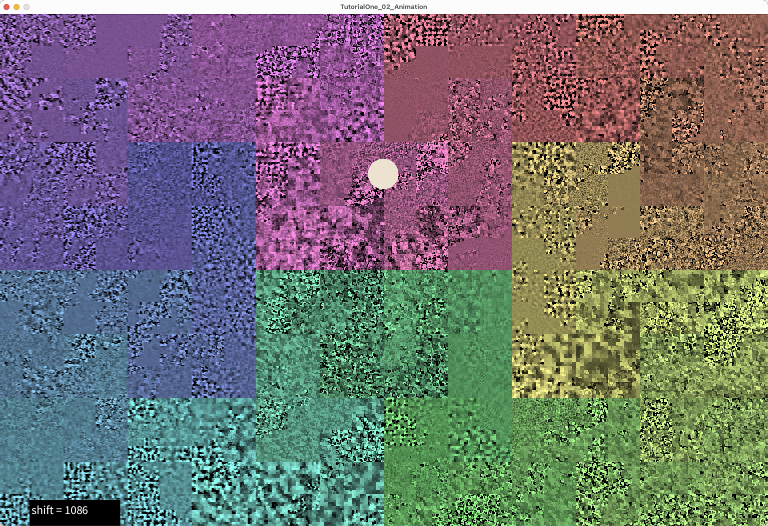

Class TutorialOne_02_Animation
- All Implemented Interfaces:
processing.core.PConstants
Pixel-shift animation, plus panning and pitch controls for the Sampler synth.
Builds on TutorialOne_01_FileIO, which provided commands
to open and display audio and image files, transcode image pixel data to
audio samples, transcode audio samples to image pixel data, and save audio
and image files. TutorialOne_01_FileIO also introduced a digital audio
instrument, PASamplerInstrument, and provided an interface which responds to
mouse clicks by playing the audio samples corresponding to the click location
in the display image. In this sketch, we add panning and pitch control to
PASamplerInstrument playSample(...) methods. The other audio
instrument, the Granular Synthesis instrument, will be introduced later on.
This sketch introduces the animation feature built-in to PixelAudioMapper,
pixel-shifting along the Signal Path, which shifts pixels in the display
and changes the correspondence between screen coordinates and audio signal
index position. The animation provides an analog to visual "audio streaming"
and can be used to create a sort of "music box" audio player.
QUICK START
- Launch the sketch and then press the 'o' key to open an image or audio file. The "audioBlend.wav" file is good for experimenting. The audio data in it will be transcoded to gray scale pixel data and displayed in the window.
- Press space or click on the display image to trigger audio events. To see the signal path as a color overlay, press the 'K' key.
- Press 'm' to run the "Music Box" routine, which triggers an audio event every frame in the same location while animating the display image with pixel shifting.
- Use the UP and DOWN arrow keys to change the amount of pixel shifting, and the 'A' key to reverse the direction of shifting. Use the 'p' and 'P' keys to change the pitch of the audio. Press 'r' to turn random ADSR envelope selection on and off. See below for more information.

We add a simple form of animation in this sketch, which consists of shifting
the pixels in the display image along the "signal path". This is a simple way
to create an animation that is directly tied to the audio data. When the
image we are animating is a representation of audio data or some other sort
of periodic pattern, pixel-shfting can result in hypnotic animated patterns.
This is demonstrated by the the WaveSynth class and the WaveSynthEditor
and ArgosyMixer sample sketches. When the pixels in the display image
are shifted, the correspondence between pixel coordinates and audio buffer
index changes. This is particularly evident when the image is a visualization
of the audio buffer. If you are looking at an image that represents audio data,
such as Saucer_mixdown.wav, you can see how animation changes the apparent
position of the audio data. When animation is running, repeated clicks at the
same location in the window will trigger different audio events.
Pixel shifting animation works by moving the pixels in the display image
mapImage once every frame by the number of pixels specified by
the variable shift, and tracking the accummulated shifting with
another variable, totalShift. The audio buffer itself is never
shifted, nor is the canonic image baseImage. We just use
totalShift to determine where to locate pixels or audio samples.
The PixelAudioMapper object mapper manages the shifting using methods
for accessing pixel and audio data that take shifting into account.
Of course, if you only want to animate the image, you can just ignore the
value of totalShift when accessing the audioBuffer.
The shift variable can be tied to the audio sample rate and the video frame
rate in such a way that the animation is synchronized with the audio when we
trigger an audio event once every frame. If the audio sample rate is 44100
and the video frame rate is 24, as it is in this example, then we can set
shift to 44100/24, which is close to 1840 ('m' key). If we then trigger an audio
event once every frame in the same location in the window, the audio events
will advance through the buffer in sync with the animation, and the audio
will play more or less as it would if it were streaming from a file. If you
double the shift or cut it in half (UP ARROW or DOWN ARROW), the audio events
will happen at double or half speed. If you reverse the sign of shift ('A'
key), the animation will run backwards, and the audio events will also happen
in reverse order. The flanging that you hear is a result of samples taken
close together interfering with each other, and is particularly evident
when shift value is changing.
We also provide commands for saving an animation to video ('V' key) and saving
the display image and audio buffer to files. To visualize the Signal Path, you
can use the 'k' or 'K' keys to overlay a spectrum of color on the display
image. The 'K' key will write the spectrum to baseImage, so that
it will persist when running animation. The 'k' key will write color data to
mapImage only.
We continue to use the Sampler instrument for audio events, showing how it can control the pitch and panning of an audio event. The playSample() methods in this sketch introduce the most complete audio triggering method available in PASamplerInstrument, one which can set sample start position, length, amplitude, ADSR-style envelope, pitch scaling and stereo pan location.
samplelen = synth.playSample(samplePos, (int) samplelen, amplitude, env, pitchScaling, pan);
Pitch scaling by default is 1.0, which is to say that samples will be played back at the recorded frequency. Panning, if it is not supplied as an argument to playSample(), is centered in the stereo field. We calculate the panning value by mapping the x-coordinate of the mouse position to the stereo pan value.
Still to come, as the tutorial advances:- drawing to trigger audio events
- the Granular Synthesis instruments
- UDP communication with Max and other media applications
The key commands
Press UP ARROW to increment pixel shift. Press DOWN ARROW to decrement pixel shift. Press ' ' (spacebar) to play sample at current mouse position. Press 'a' to turn animation on or off. Press 'A' to change animation direction. Press 'f' to rotate pixels by shift value. Press 'F' to rotate pixels by shift value. Press 'm' to play audio events synced to audio sample rate and video frame rate. Press 'c' to apply color from image file to display image (mapImage) only. Press 'C' to apply color from image file to base image and map image. Press 'k' to apply hue and saturation in the spectrum array to mapImage. Press 'K' to apply hue and saturation in the spectrum array to baseImage. Press 'o' or 'O' to open an audio or image file. Press 'p' to select low pitch scaling or default pitch scaling. Press 'P' to select high pitch scaling or default pitch scaling. Press 'd' or 'D' to turn rain on and off. Press 'r' or 'R' to toggle isRandomADSR, to use default envelope or a random choice. Press 's' to save display image to a PNG file. Press 'S' to save audio buffer to a .wav file. Press 'V' to record a video from frame 0 to frame animSteps. Press 'w' to show data values in display. Press 'h' or 'H' to show help message.
-
Field Summary
FieldsModifier and TypeFieldDescription(package private) ArrayList<ADSRParams>(package private) int(package private) float(package private) File(package private) int(package private) String(package private) String(package private) String(package private) float(package private) int(package private) ddf.minim.AudioOutput(package private) float[](package private) processing.core.PImage(package private) float(package private) PixelAudioMapper.ChannelNames(package private) int(package private) float(package private) ADSRParams(package private) float(package private) boolean(package private) int(package private) float(package private) int(package private) int(package private) float(package private) File(package private) int(package private) String(package private) String(package private) String(package private) int(package private) boolean(package private) boolean(package private) boolean(package private) boolean(package private) boolean(package private) boolean(package private) boolean(package private) float(package private) processing.core.PImage(package private) PixelAudioMapper(package private) int(package private) float(package private) ddf.minim.MinimMinim audio library(package private) MultiGen(package private) int(package private) boolean(package private) float(package private) PixelAudio(package private) ddf.minim.MultiChannelBuffer(package private) float(package private) float(package private) float(package private) int(package private) int(package private) int[](package private) int(package private) float(package private) PASamplerInstrument(package private) ArrayList<TimedLocation>(package private) int(package private) int(package private) com.hamoid.VideoExportFields inherited from class processing.core.PApplet
args, ARGS_BGCOLOR, ARGS_DISABLE_AWT, ARGS_DISPLAY, ARGS_EDITOR_LOCATION, ARGS_EXTERNAL, ARGS_FULL_SCREEN, ARGS_HIDE_STOP, ARGS_LOCATION, ARGS_PRESENT, ARGS_SKETCH_FOLDER, ARGS_STOP_COLOR, ARGS_UI_SCALE, ARGS_WINDOW_COLOR, DEFAULT_HEIGHT, DEFAULT_WIDTH, disableAWT, displayHeight, displayWidth, dmouseX, dmouseY, emouseX, emouseY, exitCalled, EXTERNAL_MOVE, EXTERNAL_STOP, finished, firstMouse, focused, frameCount, frameRate, frameRateLastNanos, g, height, insideDraw, javaPlatform, javaVersion, javaVersionName, key, keyCode, keyEvent, keyPressed, keyRepeatEnabled, looping, matchPatterns, mouseButton, mouseEvent, mousePressed, mouseX, mouseY, pixelDensity, pixelHeight, pixels, pixelWidth, platform, pmouseX, pmouseY, ratioLeft, ratioScale, ratioTop, recorder, redraw, rheight, rmouseX, rmouseY, rwidth, surface, useNativeSelect, width, windowX, windowYFields inherited from interface processing.core.PConstants
ADD, ALPHA, ALT, AMBIENT, ARC, ARGB, ARROW, BACKSPACE, BASELINE, BEVEL, BEZIER_VERTEX, BLEND, BLUR, BOTTOM, BOX, BREAK, BURN, CENTER, CHATTER, CHORD, CLAMP, CLOSE, CODED, COMPLAINT, CONTROL, CORNER, CORNERS, CROSS, CURVE_VERTEX, CUSTOM, DARKEST, DEG_TO_RAD, DELETE, DIAMETER, DIFFERENCE, DILATE, DIRECTIONAL, DISABLE_ASYNC_SAVEFRAME, DISABLE_BUFFER_READING, DISABLE_DEPTH_MASK, DISABLE_DEPTH_SORT, DISABLE_DEPTH_TEST, DISABLE_KEY_REPEAT, DISABLE_NATIVE_FONTS, DISABLE_OPENGL_ERRORS, DISABLE_OPTIMIZED_STROKE, DISABLE_STROKE_PERSPECTIVE, DISABLE_STROKE_PURE, DISABLE_TEXTURE_MIPMAPS, DODGE, DOWN, DXF, ELLIPSE, ENABLE_ASYNC_SAVEFRAME, ENABLE_BUFFER_READING, ENABLE_DEPTH_MASK, ENABLE_DEPTH_SORT, ENABLE_DEPTH_TEST, ENABLE_KEY_REPEAT, ENABLE_NATIVE_FONTS, ENABLE_OPENGL_ERRORS, ENABLE_OPTIMIZED_STROKE, ENABLE_STROKE_PERSPECTIVE, ENABLE_STROKE_PURE, ENABLE_TEXTURE_MIPMAPS, ENTER, EPSILON, ERODE, ESC, EXCLUSION, FX2D, GIF, GRAY, GROUP, HALF_PI, HAND, HARD_LIGHT, HINT_COUNT, HSB, IMAGE, INVERT, JAVA2D, JPEG, LANDSCAPE, LEFT, LIGHTEST, LINE, LINE_LOOP, LINE_STRIP, LINES, LINUX, MACOS, MACOSX, MAX_FLOAT, MAX_INT, MIN_FLOAT, MIN_INT, MITER, MODEL, MODELVIEW, MOVE, MULTIPLY, NORMAL, OPAQUE, OPEN, OPENGL, ORTHOGRAPHIC, OTHER, OVERLAY, P2D, P3D, PATH, PDF, PERSPECTIVE, PI, PIE, platformNames, POINT, POINTS, POLYGON, PORTRAIT, POSTERIZE, PROBLEM, PROJECT, PROJECTION, QUAD, QUAD_BEZIER_VERTEX, QUAD_STRIP, QUADRATIC_VERTEX, QUADS, QUARTER_PI, RAD_TO_DEG, RADIUS, RECT, REPEAT, REPLACE, RETURN, RGB, RIGHT, ROUND, SCREEN, SHAPE, SHIFT, SOFT_LIGHT, SPAN, SPHERE, SPOT, SQUARE, SUBTRACT, SVG, TAB, TARGA, TAU, TEXT, THIRD_PI, THRESHOLD, TIFF, TOP, TRIANGLE, TRIANGLE_FAN, TRIANGLE_STRIP, TRIANGLES, TWO_PI, UP, VERTEX, WAIT, WHITESPACE, WINDOWS, X, Y, Z -
Constructor Summary
Constructors -
Method Summary
Modifier and TypeMethodDescriptionvoidanimate()int[]applyColor(int[] colorSource, int[] graySource, int[] lut) Utility method for applying hue and saturation values from a source array of RGB values to the brightness values in a target array of RGB values, using a lookup table to redirect indexing.voidapplyColorMapToDisplay(boolean updateBaseImage) Apply color map hue and saturation to mapImage or baseImage.int[]applyColorShifted(int[] colorSource, int[] graySource, int[] lut, int pixelShift) Utility method for applying hue and saturation values from a source array of RGB values to the brightness values in a target array of RGB values, using a lookup table to redirect indexing.voidapplyImageColor(File imgFile, processing.core.PImage targetImage) Apply the hue and saturation of a chosen image file to the brightness channel of the display image.voidaudioFileSelectedWrite(File selection) voidaudioMouseClick(int x, int y) Typically called from mousePressed with mouseX and mouseY, generates audio events.intvoidCall to initiate process of opening an image file to get its color data.voidvoidWrapper method for Processing's selectInput commandintclipToHeight(int y) intclipToWidth(int x) voidcolorFileSelected(File selectedFile) callback method for chooseColorImage()voidcolorFileSelectedToStore(File selectedFile) voidvoidWrites the mapImage, which may change with animation, to the baseImage, a reference image that usually only changes when a new file is loaded.voidcommitNewBaseImage(processing.core.PImage img) Copies the supplied PImage to mapImage and baseImage, sets totalShift to 0 (the images are identical).voiddoRain()drop some random audio events, like unto the gentle rainvoiddraw()voiddrawCircle(int x, int y) Draws a circle at the location of an audio trigger (mouseDown event).(package private) voidPrepares Sampler instruments and assetsvoidfileSelected(File selectedFile) callback method for chooseFile(), handles standard audio and image formats for Processing.int[]getColors(int size) Generates an array of rainbow colors using the HSB color space.intgetSamplePos(int x, int y) Calculates the index of the image pixel within the signal path, taking the shifting of pixels and audioSignal into account.voidimageFileSelectedWrite(File selection) voidvoidCALL THIS METHOD IN SETUP() Initializes Minim audio library and audio variables.voidInitializes mapImage with the colors array, copies mapImage to baseImage.voidbuilt-in keyPressed handler, forwards events to parseKey.voidloadAudioFile(File audFile) Attempts to load audio data from a selected file into playBuffer, then calls writeAudioToImage() via renderAudioToMapImage(chan, 0) to transcode audio data and write it to mapImage.voidloadImageFile(File imgFile) Attempts to load image data from a selected file into mapImage, then calls writeImageToAudio() to transcode HSB brightness color data from the image to audio and writes it to playBuffer and audioSignal.static voidvoidvoidvoidThe built-in mousePressed handler for Processing, not used yet...voidvoidparseKey(char key, int keyCode) Handles key press events passed on by the built-in keyPressed method.intplaySample(int samplePos, int samplelen, float amplitude, float pan) Plays an audio sample with PASamplerInstrument and default ADSR.intplaySample(int samplePos, int samplelen, float amplitude, ADSRParams env, float pan) Plays an audio sample with PASamplerInstrument and custom ADSR.voidWrites baseImage to mapImage with an index position offset of totalShift.voidrenderAudioToMapImage(PixelAudioMapper.ChannelNames chan, int shift) Render audio into mapImage at an arbitrary phase offset.voidrenderFrame(int step) voidrenderFrame(int step, boolean isInverseShift) Renders a frame of animation: moving along the signal path, copies baseImage pixels to mapImage pixels, adjusting the index position of the copy using totalShift i.e.voidWrites a specified channel of mapImage to audioSignal.voidRun the animation for audio events.voidsaveAudioToFile(float[] samples, float sampleRate, String fileName) Saves audio data to 16-bit integer PCM format, which Processing can also open.voidsaveImageToFile(processing.core.PImage img, String fileName) voidvoidvoidsettings()voidsetup()voidshowHelp()to generate help output, run RegEx search/replace on parseKey case lines with: // case ('.'): // (.+) // println(" * Press $1 to $2.");voidStep through the animation, called by the draw() method.voidstop()turn off audio processing when we exit(package private) voidupdateAudioChain(float[] sig) (package private) voidupdateAudioChain(float[] sig, float bufferSampleRate) Bottleneck "commit" method for audio state.voidwriteAudioToImage(float[] sig, PixelAudioMapper mapper, processing.core.PImage img, PixelAudioMapper.ChannelNames chan, int shift) Transcodes audio data in sig[] and writes it to color channel chan of img using the lookup tables in mapper to redirect indexing.voidwriteImageToAudio(processing.core.PImage img, PixelAudioMapper mapper, float[] sig, PixelAudioMapper.ChannelNames chan, int shift) This method writes a color channel from an image to playBuffer, fulfilling a central concept of the PixelAudio library: image is sound.voidwriteToScreen(String msg, int x, int y, int weight, boolean isWhite) Displays a line of text to the screen, usually in the draw loop.Methods inherited from class processing.core.PApplet
abs, abs, acos, alpha, ambient, ambient, ambient, ambientLight, ambientLight, append, append, append, append, append, append, applyMatrix, applyMatrix, applyMatrix, applyMatrix, applyMatrix, arc, arc, arraycopy, arraycopy, arraycopy, arrayCopy, arrayCopy, arrayCopy, asin, atan, atan2, attrib, attrib, attrib, attribColor, attribNormal, attribPosition, background, background, background, background, background, background, background, beginCamera, beginContour, beginPGL, beginRaw, beginRaw, beginRecord, beginRecord, beginShape, beginShape, bezier, bezier, bezierDetail, bezierPoint, bezierTangent, bezierVertex, bezierVertex, binary, binary, binary, binary, blend, blend, blendColor, blendMode, blue, box, box, brightness, calcSketchPath, camera, camera, ceil, checkAlpha, checkExtension, choice, choice, circle, clear, clip, color, color, color, color, color, color, color, color, colorMode, colorMode, colorMode, colorMode, concat, concat, concat, concat, concat, concat, concat, constrain, constrain, copy, copy, copy, cos, createFont, createFont, createFont, createGraphics, createGraphics, createGraphics, createImage, createInput, createInput, createInputRaw, createOutput, createOutput, createPath, createPath, createPrimaryGraphics, createReader, createReader, createReader, createShape, createShape, createShape, createWriter, createWriter, createWriter, cursor, cursor, cursor, cursor, curve, curve, curveDetail, curvePoint, curveTangent, curveTightness, curveVertex, curveVertex, dataFile, dataPath, day, debug, degrees, delay, dequeueEvents, desktopFile, desktopPath, die, die, directionalLight, displayDensity, displayDensity, dispose, dist, dist, edge, ellipse, ellipseMode, emissive, emissive, emissive, endCamera, endContour, endPGL, endRaw, endRecord, endShape, endShape, exec, exec, exit, exitActual, exitCalled, exp, expand, expand, expand, expand, expand, expand, expand, expand, expand, expand, expand, expand, expand, expand, expand, expand, expand, expand, fill, fill, fill, fill, fill, fill, filter, filter, filter, floor, flush, focusGained, focusLost, frameMoved, frameRate, frustum, fullScreen, fullScreen, fullScreen, fullScreen, get, get, get, getExtension, getGraphics, getMatrix, getMatrix, getMatrix, getSurface, green, handleDraw, handleKeyEvent, handleMethods, handleMouseEvent, hex, hex, hex, hex, hideMenuBar, hint, hour, hue, image, image, image, imageMode, initSurface, insertFrame, isLooping, join, join, keyPressed, keyReleased, keyReleased, keyTyped, keyTyped, launch, lerp, lerpColor, lerpColor, lightFalloff, lights, lightSpecular, line, line, link, listFiles, listFiles, listPaths, loadBytes, loadBytes, loadBytes, loadFont, loadImage, loadImage, loadJSONArray, loadJSONArray, loadJSONObject, loadJSONObject, loadPixels, loadShader, loadShader, loadShape, loadShape, loadStrings, loadStrings, loadStrings, loadStrings, loadTable, loadTable, loadXML, loadXML, log, loop, mag, mag, main, main, main, makeGraphics, map, mask, match, matchAll, max, max, max, max, max, max, method, millis, min, min, min, min, min, min, minute, modelX, modelY, modelZ, month, mouseClicked, mouseDragged, mouseEntered, mouseEntered, mouseExited, mouseExited, mouseMoved, mouseMoved, mousePressed, mouseReleased, mouseWheel, mouseWheel, nf, nf, nf, nf, nf, nf, nfc, nfc, nfc, nfc, nfp, nfp, nfp, nfp, nfs, nfs, nfs, nfs, noClip, noCursor, noFill, noise, noise, noise, noiseDetail, noiseDetail, noiseSeed, noLights, noLoop, norm, normal, noSmooth, noStroke, noTexture, noTint, orientation, ortho, ortho, ortho, parseBoolean, parseBoolean, parseBoolean, parseBoolean, parseByte, parseByte, parseByte, parseByte, parseByte, parseByte, parseByte, parseByte, parseChar, parseChar, parseChar, parseChar, parseFloat, parseFloat, parseFloat, parseFloat, parseFloat, parseFloat, parseFloat, parseInt, parseInt, parseInt, parseInt, parseInt, parseInt, parseInt, parseInt, parseInt, parseInt, parseInt, parseInt, parseJSONArray, parseJSONObject, parseXML, parseXML, pause, perspective, perspective, pixelDensity, point, point, pointLight, pop, popMatrix, popStyle, postEvent, postWindowMoved, postWindowResized, pow, print, print, print, print, print, print, print, print, print, printArray, printCamera, println, println, println, println, println, println, println, println, println, println, println, printMatrix, printProjection, printStackTrace, push, pushMatrix, pushStyle, quad, quadraticVertex, quadraticVertex, radians, random, random, randomGaussian, randomSeed, rect, rect, rect, rectMode, red, redraw, registerMethod, requestImage, requestImage, resetMatrix, resetShader, resetShader, resume, reverse, reverse, reverse, reverse, reverse, reverse, reverse, rotate, rotate, rotateX, rotateY, rotateZ, round, runSketch, runSketch, runSketch, saturation, save, saveBytes, saveBytes, saveBytes, saveFile, saveFrame, saveFrame, saveJSONArray, saveJSONArray, saveJSONObject, saveJSONObject, savePath, saveStream, saveStream, saveStream, saveStream, saveStream, saveStrings, saveStrings, saveStrings, saveTable, saveTable, saveXML, saveXML, scale, scale, scale, screenX, screenX, screenY, screenY, screenZ, second, selectCallback, selectFolder, selectFolder, selectFolder, selectInput, selectInput, selectInput, selectOutput, selectOutput, selectOutput, set, set, setMatrix, setMatrix, setMatrix, setSize, shader, shader, shape, shape, shape, shapeMode, shearX, shearY, shell, shininess, shorten, shorten, shorten, shorten, shorten, shorten, shorten, showDepthWarning, showDepthWarningXYZ, showMethodWarning, showMissingWarning, showSurface, showVariationWarning, sin, size, size, size, sketchDisplay, sketchFile, sketchFullScreen, sketchHeight, sketchOutputPath, sketchOutputStream, sketchPath, sketchPath, sketchPixelDensity, sketchRenderer, sketchSmooth, sketchWidth, sketchWindowColor, smooth, smooth, sort, sort, sort, sort, sort, sort, sort, sort, sort, sort, specular, specular, specular, sphere, sphereDetail, sphereDetail, splice, splice, splice, splice, splice, splice, splice, splice, splice, splice, splice, splice, splice, split, split, splitTokens, splitTokens, spotLight, sq, sqrt, square, start, startSurface, str, str, str, str, str, str, str, str, str, str, stroke, stroke, stroke, stroke, stroke, stroke, strokeCap, strokeJoin, strokeWeight, style, subset, subset, subset, subset, subset, subset, subset, subset, subset, subset, subset, subset, subset, subset, subset, subset, subset, subset, tan, text, text, text, text, text, text, text, text, text, text, text, textAlign, textAlign, textAscent, textDescent, textFont, textFont, textLeading, textMode, textSize, texture, textureMode, textureWrap, textWidth, textWidth, textWidth, thread, tint, tint, tint, tint, tint, tint, translate, translate, triangle, trim, trim, unbinary, unhex, unregisterMethod, updatePixels, updatePixels, urlDecode, urlEncode, vertex, vertex, vertex, vertex, vertex, windowMove, windowMoved, windowRatio, windowResizable, windowResize, windowResized, windowTitle, year
-
Field Details
-
pixelaudio
PixelAudio pixelaudio -
multigen
MultiGen multigen -
genWidth
int genWidth -
genHeight
int genHeight -
mapper
PixelAudioMapper mapper -
mapSize
int mapSize -
baseImage
processing.core.PImage baseImage -
mapImage
processing.core.PImage mapImage -
chan
-
spectrum
int[] spectrum -
audioFile
File audioFile -
audioFilePath
String audioFilePath -
audioFileName
String audioFileName -
audioFileTag
String audioFileTag -
audioFileLength
int audioFileLength -
imageFile
File imageFile -
imageFilePath
String imageFilePath -
imageFileName
String imageFileName -
imageFileTag
String imageFileTag -
imageFileWidth
int imageFileWidth -
imageFileHeight
int imageFileHeight -
minim
ddf.minim.Minim minimMinim audio library -
audioOut
ddf.minim.AudioOutput audioOut -
audioGain
float audioGain -
sampleRate
float sampleRate -
fileSampleRate
float fileSampleRate -
bufferSampleRate
float bufferSampleRate -
doResample
boolean doResample -
audioSignal
float[] audioSignal -
playBuffer
ddf.minim.MultiChannelBuffer playBuffer -
audioLength
int audioLength -
noteDuration
int noteDuration -
synth
PASamplerInstrument synth -
samplerGain
float samplerGain -
isWrapAround
boolean isWrapAround -
defaultEnv
ADSRParams defaultEnv -
maxAmplitude
float maxAmplitude -
attackTime
float attackTime -
decayTime
float decayTime -
sustainLevel
float sustainLevel -
releaseTime
float releaseTime -
adsrList
ArrayList<ADSRParams> adsrList -
isRandomADSR
boolean isRandomADSR -
pitchScaling
float pitchScaling -
defaultPitchScaling
float defaultPitchScaling -
lowPitchScaling
float lowPitchScaling -
highPitchScaling
float highPitchScaling -
timeLocsArray
ArrayList<TimedLocation> timeLocsArray -
count
int count -
fileIndex
int fileIndex -
shift
int shift -
shiftInc
int shiftInc -
totalShift
int totalShift -
isAnimating
boolean isAnimating -
oldIsAnimating
boolean oldIsAnimating -
animSteps
int animSteps -
isRecordingVideo
boolean isRecordingVideo -
videoFrameRate
int videoFrameRate -
step
int step -
videx
com.hamoid.VideoExport videx -
isRaining
boolean isRaining -
isShowOverlay
boolean isShowOverlay -
isPlayMusicBox
boolean isPlayMusicBox
-
-
Constructor Details
-
TutorialOne_02_Animation
public TutorialOne_02_Animation()
-
-
Method Details
-
main
-
settings
public void settings()- Overrides:
settingsin classprocessing.core.PApplet
-
setup
public void setup()- Overrides:
setupin classprocessing.core.PApplet
-
stop
public void stop()turn off audio processing when we exit- Overrides:
stopin classprocessing.core.PApplet
-
getColors
public int[] getColors(int size) Generates an array of rainbow colors using the HSB color space.- Parameters:
size- the number of entries in the colors array- Returns:
- an array of RGB colors ordered by hue
-
initImages
public void initImages()Initializes mapImage with the colors array, copies mapImage to baseImage. MapImage handles the color data for mapper and also serves as our display image. BaseImage is intended as a reference image that typically only changes when you load a new image. -
draw
public void draw()- Overrides:
drawin classprocessing.core.PApplet
-
animate
public void animate() -
stepAnimation
public void stepAnimation()Step through the animation, called by the draw() method. Will also record a frame of video, if we're recording. -
renderFrame
public void renderFrame(int step, boolean isInverseShift) Renders a frame of animation: moving along the signal path, copies baseImage pixels to mapImage pixels, adjusting the index position of the copy using totalShift i.e. we don't actually rotate the pixels, we just shift the position they're copied to- Parameters:
isInverseShift- boolean, if true shift is negative
-
renderFrame
public void renderFrame(int step) -
doRain
public void doRain()drop some random audio events, like unto the gentle rain -
writeToScreen
Displays a line of text to the screen, usually in the draw loop. Handy for debugging. typical call: writeToScreen("When does the mind stop and the world begin?", 64, 1000, 24, true);- Parameters:
msg- message to writex- x coordinatey- y coordinateweight- font weightisWhite- if true, white text, otherwise, black text
-
mousePressed
public void mousePressed()The built-in mousePressed handler for Processing, not used yet...- Overrides:
mousePressedin classprocessing.core.PApplet
-
mouseClicked
public void mouseClicked()- Overrides:
mouseClickedin classprocessing.core.PApplet
-
mouseDragged
public void mouseDragged()- Overrides:
mouseDraggedin classprocessing.core.PApplet
-
mouseReleased
public void mouseReleased()- Overrides:
mouseReleasedin classprocessing.core.PApplet
-
keyPressed
public void keyPressed()built-in keyPressed handler, forwards events to parseKey.- Overrides:
keyPressedin classprocessing.core.PApplet
-
parseKey
public void parseKey(char key, int keyCode) Handles key press events passed on by the built-in keyPressed method. By moving key event handling outside the built-in keyPressed method, we make it possible to post key commands without an actual key event. Methods and interfaces and even other threads can call parseKey(). This opens up many possibilities and a some dangers, too.- Parameters:
key-keyCode-
-
showHelp
public void showHelp()to generate help output, run RegEx search/replace on parseKey case lines with: // case ('.'): // (.+) // println(" * Press $1 to $2."); -
applyColor
public int[] applyColor(int[] colorSource, int[] graySource, int[] lut) Utility method for applying hue and saturation values from a source array of RGB values to the brightness values in a target array of RGB values, using a lookup table to redirect indexing.- Parameters:
colorSource- a source array of RGB data from which to obtain hue and saturation valuesgraySource- an target array of RGB data from which to obtain brightness valueslut- a lookup table, must be the same size as colorSource and graySource- Returns:
- the graySource array of RGB values, with hue and saturation values changed
- Throws:
IllegalArgumentException- if array arguments are null or if they are not the same length
-
applyColorShifted
public int[] applyColorShifted(int[] colorSource, int[] graySource, int[] lut, int pixelShift) Utility method for applying hue and saturation values from a source array of RGB values to the brightness values in a target array of RGB values, using a lookup table to redirect indexing.- Parameters:
colorSource- a source array of RGB data from which to obtain hue and saturation valuesgraySource- an target array of RGB data from which to obtain brightness valueslut- a lookup table, must be the same size as colorSource and graySourcepixelShift- total amount of pixel shifting in the image- Returns:
- the graySource array of RGB values, with hue and saturation values changed
- Throws:
IllegalArgumentException- if array arguments are null or if they are not the same length
-
applyColorMapToDisplay
public void applyColorMapToDisplay(boolean updateBaseImage) Apply color map hue and saturation to mapImage or baseImage.- Parameters:
updateBaseImage- if true, update baseImage, otherwise just update mapImage
-
chooseColorImage
public void chooseColorImage()Call to initiate process of opening an image file to get its color data. -
chooseColorImageAndStore
public void chooseColorImageAndStore() -
colorFileSelected
callback method for chooseColorImage()- Parameters:
selectedFile- the File the user selected
-
colorFileSelectedToStore
-
applyImageColor
Apply the hue and saturation of a chosen image file to the brightness channel of the display image.- Parameters:
imgFile- selected image file, source of hue and saturation valuestargetImage- target image where brightness will remain unchanged
-
chooseFile
public void chooseFile()Wrapper method for Processing's selectInput command -
fileSelected
callback method for chooseFile(), handles standard audio and image formats for Processing. If a file has been successfully selected, continues with a call to loadAudioFile() or loadImageFile().- Parameters:
selectedFile- the File the user selected
-
loadAudioFile
Attempts to load audio data from a selected file into playBuffer, then calls writeAudioToImage() via renderAudioToMapImage(chan, 0) to transcode audio data and write it to mapImage. If doResample is true, resamples files whose sample rate differs from the current audio output sample rate. As long as the Sampler keeps track of the bufferSampleRate with updateAudioChain(), the audio will not sound different.- Parameters:
audFile- an audio file
-
renderAudioToMapImage
Render audio into mapImage at an arbitrary phase offset. In simple examples, shift will usually be 0. In later examples or in your own code, shifted renders may be layered, blended, or used as temporary performance/display operations without committing them to baseImage. -
writeAudioToImage
public void writeAudioToImage(float[] sig, PixelAudioMapper mapper, processing.core.PImage img, PixelAudioMapper.ChannelNames chan, int shift) Transcodes audio data in sig[] and writes it to color channel chan of img using the lookup tables in mapper to redirect indexing. Calls mapper.mapSigToImgShifted(), which will throw an IllegalArgumentException if sig.length != img.pixels.length or sig.length != mapper.getSize().- Parameters:
sig- an array of float, should be audio data in the range [-1.0, 1.0]mapper- a PixelAudioMapperimg- a PImagechan- a color channelshift- the number of indices to shift when writing audio
-
loadImageFile
Attempts to load image data from a selected file into mapImage, then calls writeImageToAudio() to transcode HSB brightness color data from the image to audio and writes it to playBuffer and audioSignal.- Parameters:
imgFile- an image file
-
writeImageToAudio
public void writeImageToAudio(processing.core.PImage img, PixelAudioMapper mapper, float[] sig, PixelAudioMapper.ChannelNames chan, int shift) This method writes a color channel from an image to playBuffer, fulfilling a central concept of the PixelAudio library: image is sound. Calls mapper.mapImgToSig(), which will throw an IllegalArgumentException if img.pixels.length != sig.length or img.width * img.height != mapper.getWidth() * mapper.getHeight(). Sets totalShift = 0 on completion: the image and audio are now in sync.- Parameters:
img- a PImage, a source of datamapper- a PixelAudioMapper, handles mapping between image and audio signalsig- an target array of float in audio formatchan- a color channelshift- number of indices to shift
-
renderMapImageToAudio
Writes a specified channel of mapImage to audioSignal.- Parameters:
chan- the selected color channel
-
commitMapImageToAudio
public void commitMapImageToAudio() -
commitMapImageToBaseImage
public void commitMapImageToBaseImage()Writes the mapImage, which may change with animation, to the baseImage, a reference image that usually only changes when a new file is loaded. -
commitNewBaseImage
public void commitNewBaseImage(processing.core.PImage img) Copies the supplied PImage to mapImage and baseImage, sets totalShift to 0 (the images are identical).- Parameters:
img-
-
refreshMapImageFromBase
public void refreshMapImageFromBase()Writes baseImage to mapImage with an index position offset of totalShift. -
saveToAudio
public void saveToAudio() -
audioFileSelectedWrite
-
saveAudioToFile
public void saveAudioToFile(float[] samples, float sampleRate, String fileName) throws IOException, UnsupportedAudioFileException Saves audio data to 16-bit integer PCM format, which Processing can also open. This same method can be called as a static method in PixelAudio.- Parameters:
samples- an array of floats in the audio range (-1.0f, 1.0f)sampleRate- audio sample rate for the filefileName- name of the file to save to- Throws:
IOException- an Exception you'll need to handle to call this methodUnsupportedAudioFileException- another Exception
-
saveToImage
public void saveToImage() -
imageFileSelectedWrite
-
saveImageToFile
-
initAudio
public void initAudio()CALL THIS METHOD IN SETUP() Initializes Minim audio library and audio variables. -
ensureSamplerReady
void ensureSamplerReady()Prepares Sampler instruments and assets -
initADSRList
public void initADSRList() -
audioMouseClick
public void audioMouseClick(int x, int y) Typically called from mousePressed with mouseX and mouseY, generates audio events.- Parameters:
x- x-coordinate within a PixelAudioMapper's widthy- y-coordinate within a PixelAudioMapper's height
-
clipToWidth
public int clipToWidth(int x) - Parameters:
x- a value to constrain to the current window width- Returns:
- the constrained value
-
clipToHeight
public int clipToHeight(int y) - Parameters:
y- a value to constrain to the current window height- Returns:
- the constrained value
-
getSamplePos
public int getSamplePos(int x, int y) Calculates the index of the image pixel within the signal path, taking the shifting of pixels and audioSignal into account. See the MusicWindowBox sketch for use of a windowed buffer in this calculation.- Parameters:
x- an x coordinate within mapImage and display boundsy- a y coordinate within mapImage and display bounds- Returns:
- the index of the sample corresponding to (x,y) on the signal path
-
playSample
Plays an audio sample with PASamplerInstrument and custom ADSR.- Parameters:
samplePos- position of the sample in the audio buffersamplelen- length of the sample (will be adjusted)amplitude- amplitude of the sample on playbackenv- an ADSRParams envelope for the sample- Returns:
- the calculated sample length in samples
-
playSample
public int playSample(int samplePos, int samplelen, float amplitude, float pan) Plays an audio sample with PASamplerInstrument and default ADSR.- Parameters:
samplePos- position of the sample in the audio buffersamplelen- length of the sample (will be adjusted)amplitude- amplitude of the sample on playback- Returns:
- the calculated sample length in samples
-
calcSampleLen
public int calcSampleLen() -
updateAudioChain
void updateAudioChain(float[] sig, float bufferSampleRate) Bottleneck "commit" method for audio state. Takes an arbitrary input signal and installs it as the canonical audio signal used by the application. This method: - Resizes/pads/truncates the input to mapper.getSize() - Copies the data to ensure no external aliasing - Updates audioSignal (canonical signal handled by application code) - Updates playBuffer (audio buffer used by Minim audio library methods) - Propagates the buffer to active instruments: edit for your own instruments This is the ONLY method that should mutate the global audio signal state. In PixelAudio examples, the signal is typically loaded from a file, but it could also be signal cached in memory, a signal generated by code, audio captured live, etc.- Parameters:
sig- an audio signalbufferSampleRate- audio sample rate for sig, usually obtained when reading an audio file
-
updateAudioChain
void updateAudioChain(float[] sig) -
runTimeArray
public void runTimeArray()Run the animation for audio events. -
drawCircle
public void drawCircle(int x, int y) Draws a circle at the location of an audio trigger (mouseDown event).- Parameters:
x- x coordinate of circley- y coordinate of circle
-